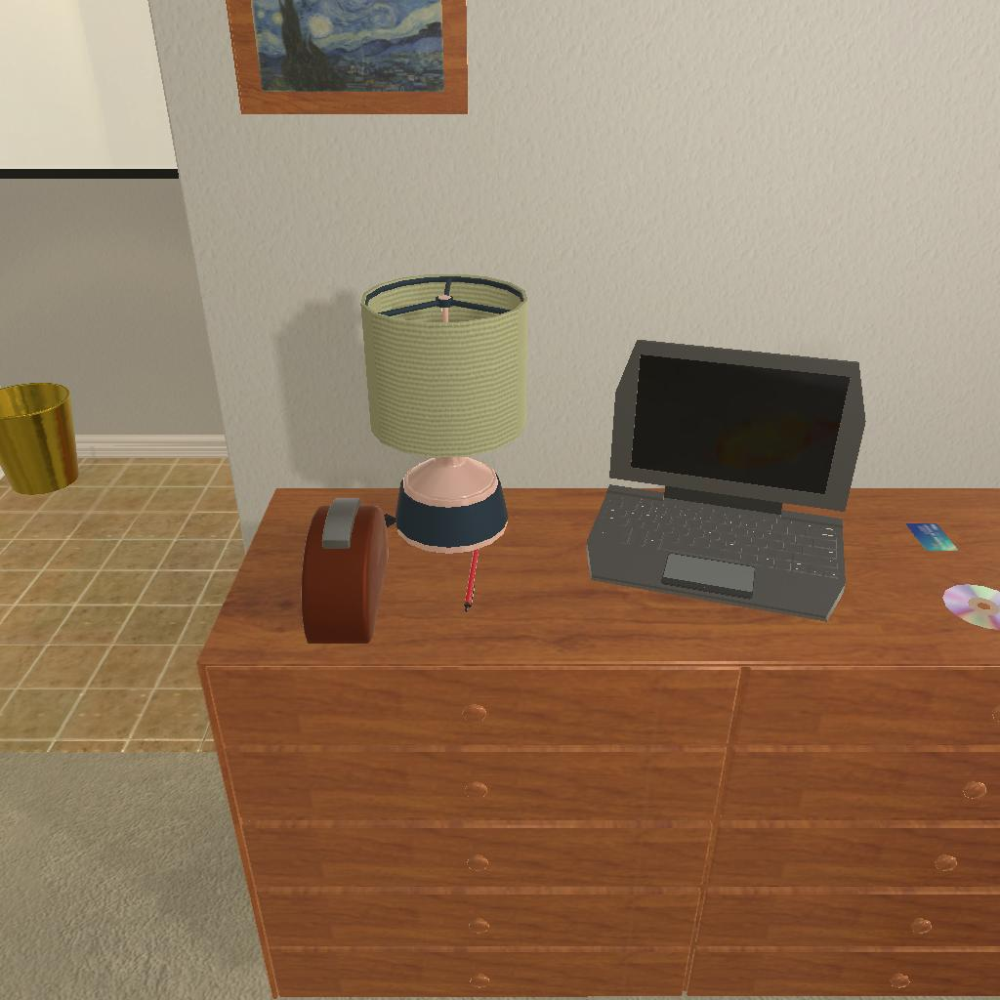

---------------------------------------------------------task: 1---------------------------------------------------------
--------------------------------------------------------------------------------------------------------------------------------------------------------------------
--------------------------------------------------------------------------------------------------------------------------------------------------------------------
Step:--------------------------------------------------------------------------1-------------------------------------------------------------------------------
----------------------------------------
VLM Prompt:
**Task**
Please perform as an embodied AI agent. Our final objective is to look at alarmclock under the desklamp. Below is the plan for completing the task, the current observation, alongside historical data and admissible actions for the next step. Please determine the best action for the next step!
**Plan**
Below is a detailed step-by-step plan to complete the task.
1. Find an alarm clock.
2. Pick up the alarm clock.
3. Find a desk lamp.
4. Turn on the desk lamp.
5. Hold the alarm clock under the lit desk lamp to look at it.
**Current Observation**
Displayed is an image capturing the current position of the agent.
Objects in The Image: ['laptop', 'lamp', 'desk', 'chair', 'painting', 'waste bin', 'notebook', 'pen', 'credit card', 'palette']
**History Information**
Displayed are the previous observations with their corresponding actions.
State 0:
No history.
State 1:
1. Step Index in the Plan: 1
2. Objects: Window, Plant in Pot, Wooden Drawer Chest, CD, Small Figurine, Bookshelf, Books, Black Mug, Framed Picture
3. Action: go to drawer 1
**Admissible Actions**
(1): go to bed 1
(2): go to dresser 1
(3): go to drawer 2
(4): go to drawer 3
(5): go to drawer 4
(6): go to drawer 5
(7): go to garbagecan 1
(8): go to drawer 6
(9): go to drawer 7
(10): go to drawer 8
(11): go to drawer 9
(12): go to drawer 10
(13): go to shelf 1
(14): go to shelf 2
(15): go to shelf 3
(16): go to shelf 4
(17): go to shelf 5
(18): go to shelf 6
(19): go to shelf 7
(20): open drawer 1
(21): close drawer 1
**Analysis Guideline**
1. Analyze the history and current observation, and then determine our current step in the plan and our current place.
2. List all visible objects related to the task in the current observation, without summarizing any as "various items."
3. Analyze the objects in the current observation based on the history and the requirements for the current step, and then determine if we can complete the step with the current observation.
4. Analyze and decide on the most appropriate action to take.
5. Summarize the analysis using the following format: "Analysis: [The summarization of the analysis], The Most Appropriate Action: (i which is the integer.): [Selected action]"
**Notes**
1. We must complete each step of the plan in order and cannot skip steps when the previous ones are not finished.
2. For "Go to" actions listed as "go to xxx [n]", interpret this as there are n distinct actions available: "go to xxx 1", "go to xxx 2", ..., "go to xxx n". Select one specific action from these options instead of using "go to xxx [n]".
3. If receptacles such as drawers, cabinets, and so forth are closed in the current observation, we may try to open them.
4. Pay attention to synonyms and ensure clarity in the terms used.
5. We must determine and provide the single action which must be in the **Admissible Actions**.
6. If there is no history available, we are at the first step and the current place is "Unknown".
**Answer**
Please select the most suitable action by following the **Analysis Guideline**, keeping the above **Notes** in mind.
----------------------------------------
----------------------------------------
VLM Response:
Analysis: The current step in the plan is to find an alarm clock, which is step 1. The current place, based on the objects mentioned in the current observation, appears to be near a desk with a lamp, laptop, and other desk-related items. None of the objects listed in the current observation are an alarm clock, which means we cannot complete the current step with this observation. Among the admissible actions, none involve directly interacting with an alarm clock, so the best course of action is to continue searching in locations where an alarm clock might be found. Since desks often have drawers where items like alarm clocks might be stored, the most appropriate action would be to investigate one of the drawers. Opening drawer 1, which we approached in the previous state, seems like the next logical step.
The Most Appropriate Action: (20): open drawer 1
----------------------------------------
----------------------------------------
>>> Refine VLM Response and Get Pure Action: open drawer 1
----------------------------------------
-----------------------------------------------------------------
Running time: 7.4217610359191895 seconds
Total Money: 0
-----------------------------------------------------------------
-----------------------------------------------------------------
Summarization Prompt:
**Context**
Analysis: Since there is no history information, we are at the first step in the plan, which is to find a statue. The current place is unknown. In the current observation, we see a floorlamp next to an armchair with a small table that has a small object on it, which could potentially be the statue we are looking for. Since the plan requires us to find a statue first and it appears there might be one on the table next to the armchair, we should investigate this object to determine if it is the statue we need.
The Most Appropriate Action: (1): go to armchair 1
**Summary**
1. Step Index in the Plan: 1
2. Objects: Floorlamp, Armchair, Small Table, Small Object (potential statue)
3. Action: go to armchair 1
**Context**
Analysis: The current step in the plan is to find an alarm clock, which is step 1. The current place, based on the objects mentioned in the current observation, appears to be near a desk with a lamp, laptop, and other desk-related items. None of the objects listed in the current observation are an alarm clock, which means we cannot complete the current step with this observation. Among the admissible actions, none involve directly interacting with an alarm clock, so the best course of action is to continue searching in locations where an alarm clock might be found. Since desks often have drawers where items like alarm clocks might be stored, the most appropriate action would be to investigate one of the drawers. Opening drawer 1, which we approached in the previous state, seems like the next logical step.
The Most Appropriate Action: (20): open drawer 1
Please summarize the context by following above examples when providing the summary, and ensure that only the summary is included, without any extra explanation.
**Summary**
-----------------------------------------------------------------
-----------------------------------------------------------------
Summarization Response:
1. Step Index in the Plan: 1
2. Objects: Desk, Lamp, Laptop, Desk-related items
3. Action: open drawer 1
-----------------------------------------------------------------
-----------------------------------------------------------------
Text Observation:You open the drawer 1. The drawer 1 is open. In it, you see a laptop 1, a desklamp 1, a alarmclock 1, a cd 1, a creditcard 1, a pen 1, and a keychain 1.
-----------------------------------------------------------------
UNSUCCEED